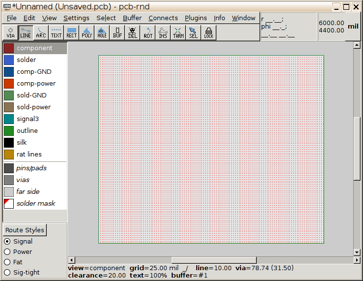
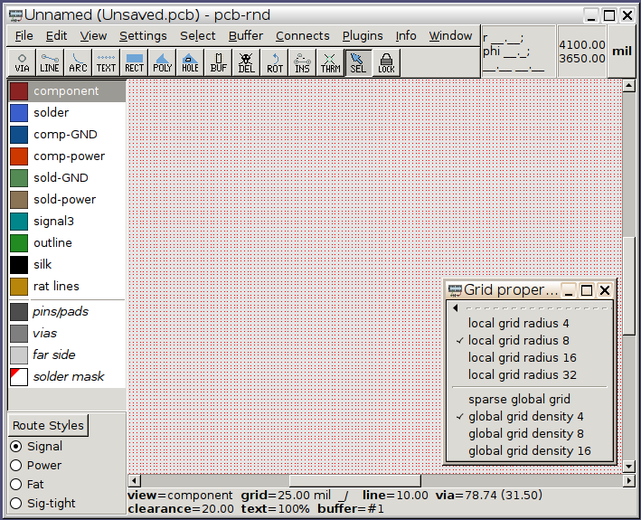
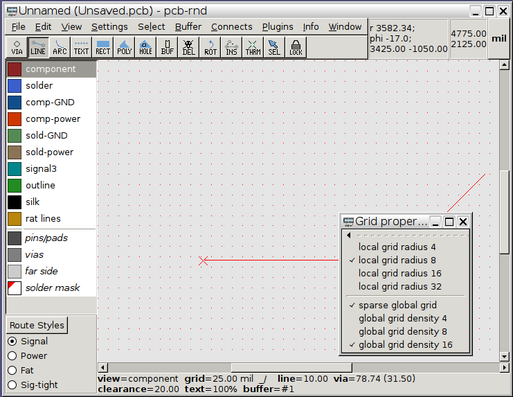
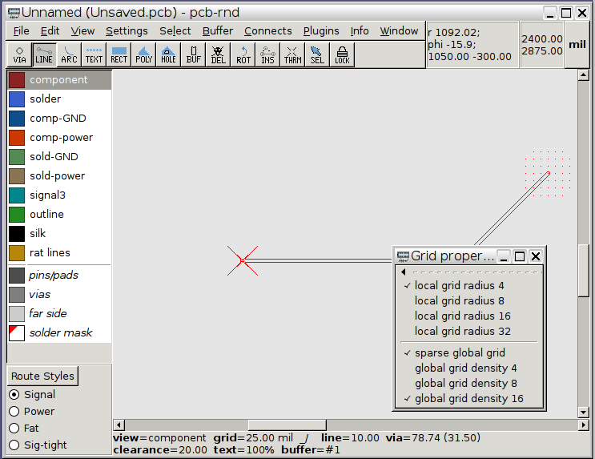
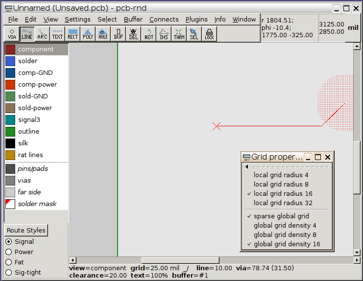

| Main | News | People | Events | pcb-rnd |
|---|
If the grid is very dense, on a large screen the software render may slow down. This is noticeable in pan and zoom mostly. The bottleneck is the gtk call that draws the grid points: if there are too many of them, it's slow.

Next, the compile-time configurable "minimum distance between grid points before it is too dense" setting is user configurable now. The default value can be changed in any of the usual configuration sources. However, when the configured density is reached while zooming out, there are two options.
The first, default option is to do the same that the original code did: just hide the grid:

An alternative is to use sparse global grid which means only every 2nd, 3rd, 4th, ... Nth grid point is drawn. The cursor still snaps to every real grid point, so the grid got sparse only on the display. Note how the line is drawn on invisible grid points:


The user can configure or interactively set the radius in which the grid points are drawn:

The radius is given in "number of grid points", thus the local grid yields a constant number of points that is independent of the actual grid size. When a local grid gets too dense, it is hidden - there's no sparse option, since local grids usually have too few points to make reasonable skips.